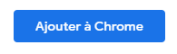
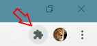
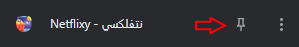
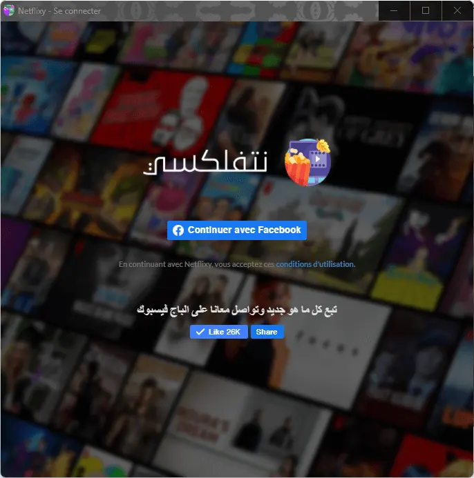
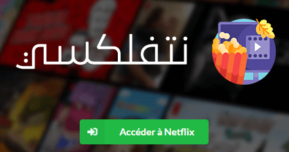

بش تصب نتفلكسي لازم يكون عندك متصفح
Google Chrome
كان ما نجمتش تصب نتفلكسي عليه، تنجم تستعمل
Microsoft Edge أو Brave أو Opera
تدخل للرابط هذا 👇
تنزل على Ajouter à Chrome، و تختار Ajouter

إذا تستعمل Chrome، لازمك تنزل الفوق على اليمين على أيقونة الإضافات

بش تطلعلك ليستا فيها الإضافات الكل، تلوج على نتفلكسي وتنزل عل الزر إلي بجنبها

كان طبقت الخطوات الكل صحاح، تلقى أيقونة نتفلكسي تزادت في المتصفح، ما عليك كان تنزل عليها و تنزل على
Continuer avec Facebook


تنزل مرة أخرى Continuer في فيسبوك

تنزل Accéder à Netflix يتحلك الحساب نتفلكس متاعك !
